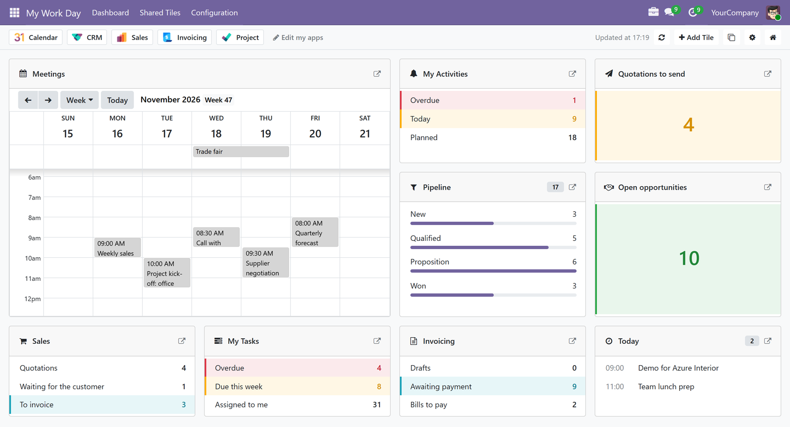
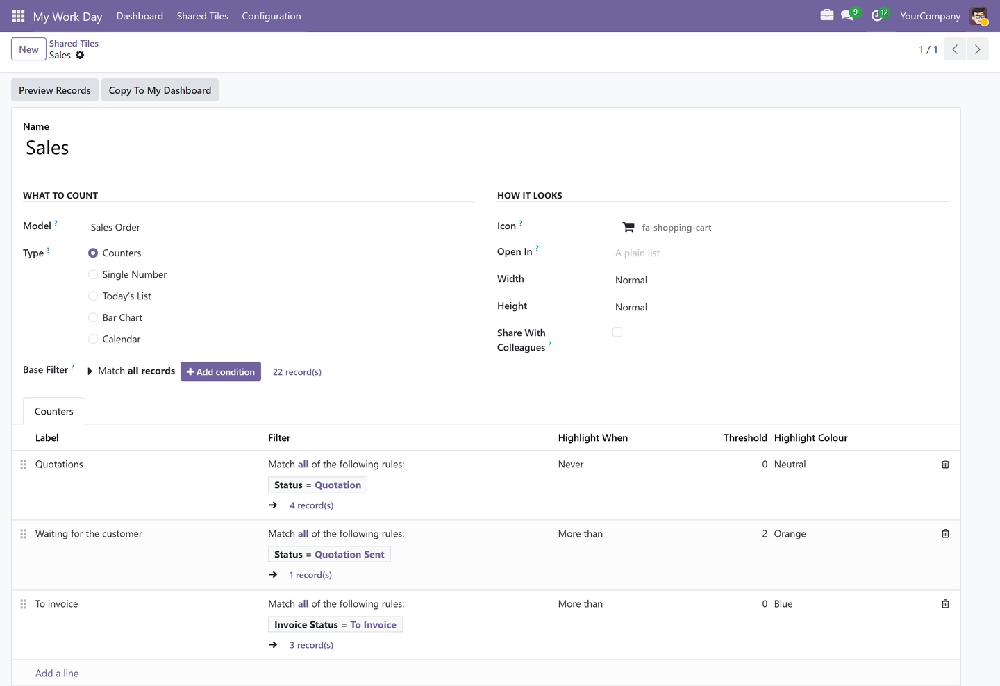

Open Odoo and see, on one page, what is waiting for you today.

Odoo opens on a grid of apps. It tells you where things are, not what needs doing. So the day starts with a tour: open Sales, filter the quotations still to send. Switch to Invoicing, look for the invoices that are overdue. Then Project, for the tasks that are late. Then your activities.
And what you need to see depends on your job. A salesperson follows quotations and orders, an accountant chases unpaid invoices and bills to approve, a project manager watches deadlines. Everyone rebuilds their own list of filters, every day, from memory.
It takes time, and it is easy to get wrong: forget one filter on a busy morning, and the invoice that needed a reminder waits another week.
Each person gets a dashboard of the numbers that matter for their work. What needs attention is highlighted, and every number opens exactly the records behind it, ready to work on.
|
|
| ||||||||||||||||||||||||
Add your week's meetings, a chart of your pipeline, the one figure you watch most — and make it the page Odoo opens on. Your favourite apps sit one click away at the top.
A tile is a few named filters, made with Odoo's own filter builder, the one you already know from every search bar. Each line shows how many records it finds while you build it. Built a good one? Share it, and colleagues copy it onto their own dashboard in a click.
